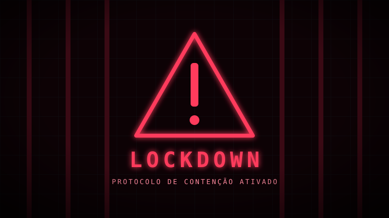

Missão interrompida
GAME OVER

Você apertou o LOCKDOWN
Todas as portas do setor se fecharam ao mesmo tempo. Incluindo a que você precisava.
💡 Dica: nem todo botão vermelho precisa ser apertado.
Acesso negado 3 vezes
Você digitou senhas aleatórias no terminal. Na terceira tentativa, o sistema identificou um intruso e chamou os seguranças.
💡 Dica: na Sala de Controle, as câmeras mostram tudo o que você precisa.
A cápsula explodiu
A pressão acumulada estourou o vidro. O alarme de contaminação selou o laboratório.
💡 Dica: rachadura + "pressão instável" nunca é boa notícia.
Gás tóxico
Ao abrir a válvula do tubo, o líquido verde virou fumaça. Você desmaia... e acorda dentro da cápsula de novo.
💡 Dica: no laboratório, a resposta está nos papéis e nas telas.
Choque de 380V
O gerador estava ligado e o chão, molhado. Você acorda de novo... dentro da cápsula.
💡 Dica: o protocolo da prancheta avisava sobre o gerador.
Curto-circuito
Os cabos da parede eram de alta tensão. Uma faísca derrubou a energia do setor inteiro, e as portas travaram no modo de segurança.
💡 Dica: leia o quadro de força antes de mexer em qualquer coisa.
Cartão queimado
O leitor estava sem energia e deu um pico de tensão ao receber o cartão. O chip derreteu na sua mão.
💡 Dica: um painel desligado não lê nada. O que ele precisa primeiro?
A porta não cede
Você bateu na porta de aço até as câmeras te encontrarem. Os seguranças chegaram primeiro.
💡 Dica: o painel ao lado da porta é o caminho.
Senha incorreta
O teclado fica vermelho: "ACESSO NEGADO — TRAVA PERMANENTE".
💡 Dica: junte a regra da prancheta com o número que aparece no computador.
Protocolo de contenção iniciado
Alguma escolha deu muito errado. As portas foram seladas.